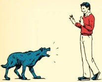
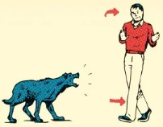
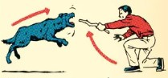
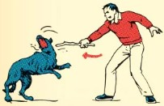

|
Как вести себя, если ты встретил на улице бродячую собаку
Держись спокойно, не беги, не катайся рядом с собакой на велосипеде (роликах), чтобы не разозлить собаку.
Если собака проявляет к тебе интерес, спокойным голосом отдай команду «Фу!», «Место», после такой команды собака отступит.
|

|
Как избежать нападения собаки
Не смотри собаке в глаза – это расценивается как провокация.
Не дразни собаку, не отбирай предметы, с которыми она играет, она может тебя укусить.
Не пользуйся ультразвуковым свистком рядом с необученной собакой, это может напугать собаку.
Не улыбайся ей, собака может принять улыбку за оскал.
Ни в коем случае не показывай своего страха.
Не трогай собаку, если она ест, если охраняет своих детенышей.
Не буди собаку, если она спит.
|

|
Что делать, если собака приготовилась напасть
Твердым голосом отдай команду («Место!», «Стоять!», «Сидеть!» или «Фу!»).
Отступай к укрытию спиной вперед, а еще лучше боком, чтобы держать собаку в поле своего зрения, не беги.
Зови на помощь окружающих.
Если собака прыгает на тебя – постарайся прижаться спиной к стене дома или к забору, для защиты используй камни, палку или зонтик. Прежде всего защищай горло, лицо, живот. Помни, что самыми слабыми местами (болевыми точками) у собаки являются нос, язык, глаза, спина и пах.
|

|
Если собака за кем-то бежит
Нужно отвлечь внимание собаки (но не привлекать ее внимания на себя). Например, можно кинуть что-нибудь в сторону собаки.
Вооружиться палкой (или тем, что есть под рукой), попросить прохожих помочь.
Двигаться с пострадавшим в укрытие (им может стать подъезд, магазин, глухой забор).
|